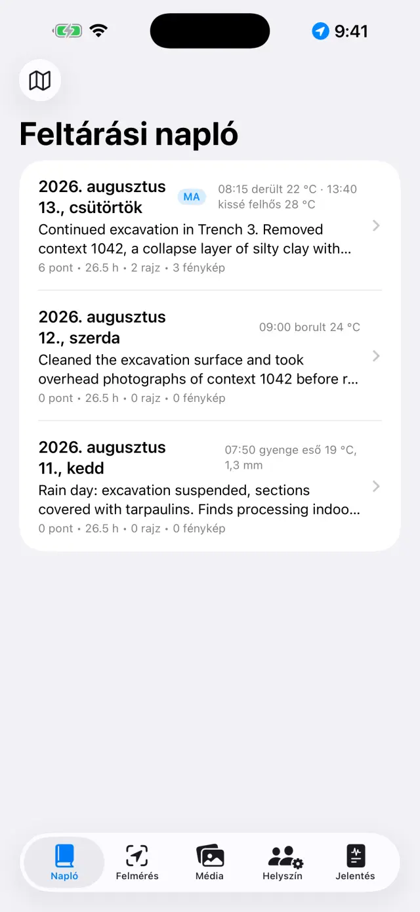
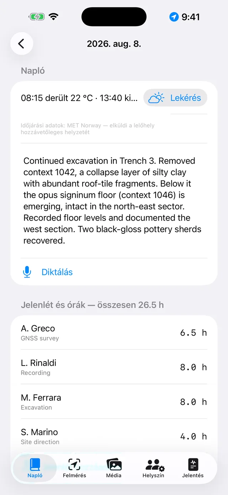
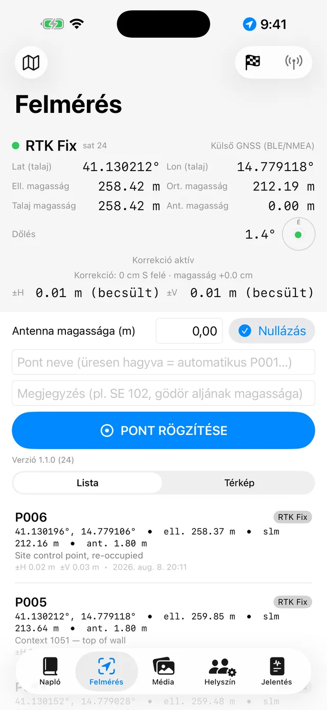
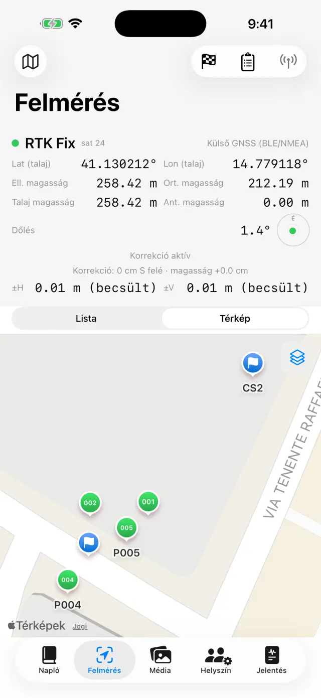
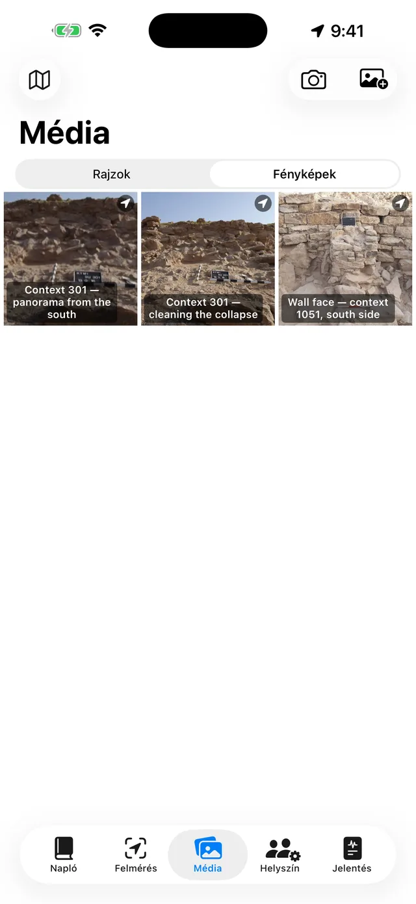
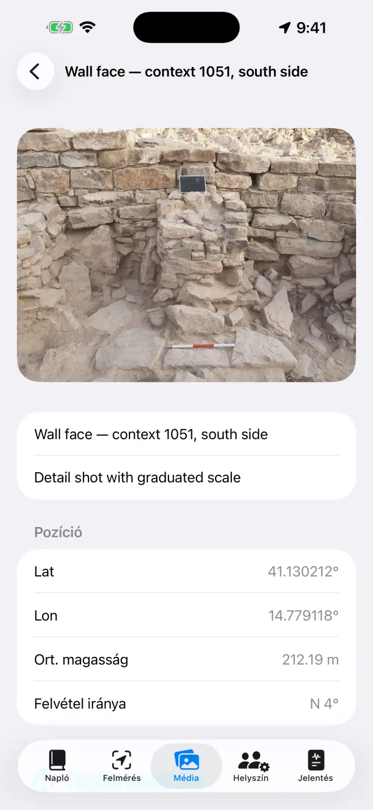
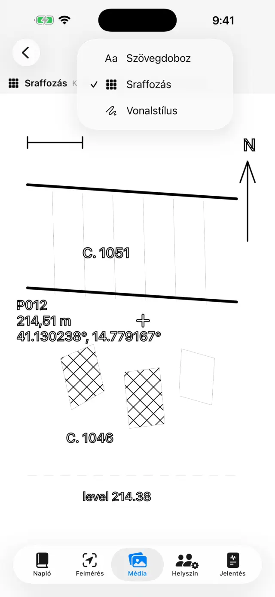
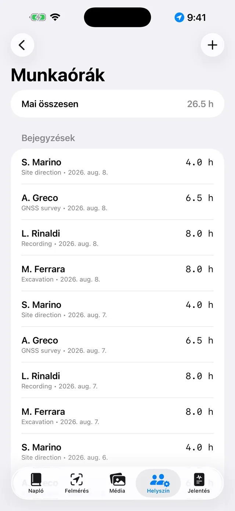
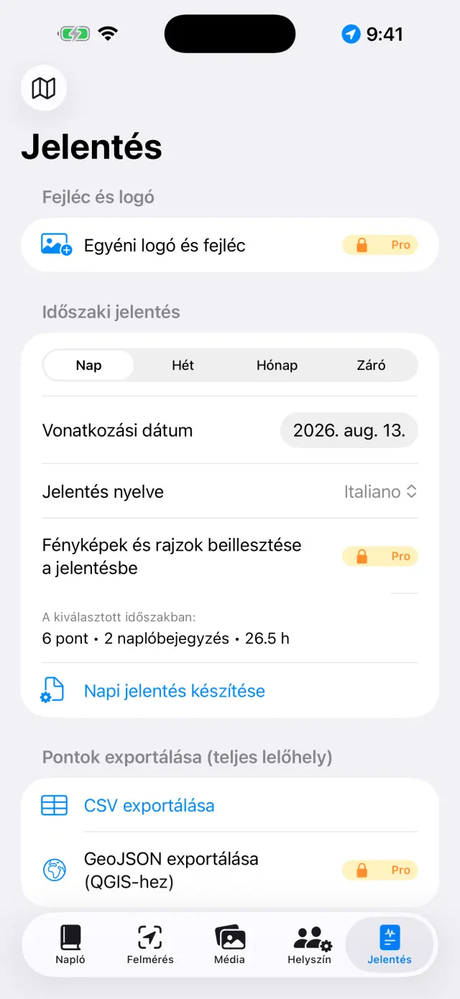

A digitális feltárási napló iPhone-ra és iPadre. 100%-ban offline: az adatok a készüléken maradnak.
Röviden
Egyetlen elven alapul minden: minden feltárási nap egy oldal,
amely magától kitöltődik. A dolgokat ott kell rögzíteni, ahol történnek — egy
GNSS-pontot a Felmérésben, egy fényképet a Médiában, az órákat a Helyszínen —,
a Napló napi oldala pedig mindezt automatikusan összegyűjti. A hét
vagy a feltárás végén a jelentések maguktól elkészülnek az oldalak alapján.
Egy jellemző nap
ReggelNyissa meg a nap oldalát, jegyezze fel az időjárást és a naplóbejegyzést (akár hangosan is, a Diktálás gombbal)
LétszámA Helyszínen rögzítse, ki van jelen, és mindenki óráit
FelmérésVegye fel a GNSS-pontokat; RTK esetén előbb ellenőrizzen egy alappontot
FényképekFényképezzen a Médiaból: a koordináták automatikusan hozzákapcsolódnak
RajzokPausolja át a metszetet vagy az alaprajzot egy fényképen (digitális pauszpapír)
EsteA Jelentés fülön készítse el a napi jelentést: a PDF küldésre kész
Első lépések
Az első indításkor már található egy mintalelőhely. Sajátjának
létrehozásához érintse meg a lelőhely nevét fent (🗺 ikon) →
Új lelőhely…, majd adjon neki nevet (pl. „Colle Sant'Angelo —
Szelvény 3”).
Az aktív lelőhely neve mindig látható fent: minden fül ennek a
lelőhelynek az adatait mutatja. A lelőhely váltásához érintse meg ismét a
nevet: a lista a „Saját lelőhelyek” cím alatt található, a Lelőhely
átnevezése… lehetőséggel pedig anélkül javíthatja ki a nevet, hogy
bármit is elveszítene.
Kéréskor adja meg az engedélyeket: helyadatok (a pontokhoz),
kamera (a fényképekhez), mikrofon (a diktáláshoz),
Bluetooth (csak külső vevő használatakor).
Az öt fül
📓 Napló
Érintsen meg egy napot az oldalának megnyitásához: az adott nap
naplóbejegyzése, időjárása, létszáma, pontjai, fényképei és rajzai már ott
vannak.
Írja meg a naplóbejegyzést, vagy érintse meg a Diktálás gombot,
és beszéljen: az átirat a készüléken készül, hálózat nélkül is működik.
Az időjárást kézzel is beírhatja (pl. „Derült, 28 °C, gyenge szél”), vagy
lekérheti a Lekérés gombbal, amely a norvég meteorológiai
szolgálattól kéri le a pillanatnyi állapotot. Ehhez hálózat szükséges, és csak
a mai napra vonatkozik: a tegnapi időjárás már nem állítható vissza. Egy
második érintés délután újabb mérést ad hozzá. Ami kézzel van beírva, mindig
elsőbbséget élvez.
Lekéréskor csak a terület kb. 11 méterre kerekített helyzete hagyja el a
készüléket, a jelentésekben pedig a sor a jelentés nyelvén jelenik meg.

A napok listája

Egy nap oldala
📍 Felmérés
A felső panel mutatja az élő helyzetet: koordináták, magasságok,
pontosság és fixtípus (GPS / RTK Float / RTK Fix).
Mérőrúd használatakor állítsa be az Antenna magassága (m)
értéket: a pont magassága automatikusan a talajra vetül.
Érintse meg a Pont rögzítése gombot. A nevek sorban
következnek (P001, P002…), de megadhat sajátot is (pl. „SE 102 — gödör
alja”), és jegyzetet is hozzáadhat.
Váltson a Lista és a Térkép között a pontok
helyszíni megtekintéséhez; a térképről bekapcsolhatja a katasztert vagy egy
másik WMS-szolgáltatást.
Az alappontok (🏁) saját szakasszal rendelkeznek: importálja őket
CSV-ből, vagy hozza létre őket, majd az Ellenőrzés gombbal kövesse
élőben a ΔÉszak/ΔKelet/ΔMag. eltéréseket a felmérés előtt.
A Szintezési jegyzőkönyv az optikai szintező műszer terepi
jegyzőkönyve: állomások, hátra- és előremérések, egy kiinduló alapponttól
számított magasságok, záróhiba-ellenőrzéssel. A szintezett pontok a
magasságukkal kerülnek be a lelőhelyre, akárcsak a GNSS-pontok.

A Felmérés GNSS-panelje

Pontok és alappontok a térképen
Minden pont mindkét magasságot tárolja: az
ellipszoidit és az ortometrit (tszf.). A telefon belső GPS-ével a tszf.
magasság nem biztos, hogy elérhető: ehhez külső vevő szükséges (lásd lent).
📷 Média
Fényképezzen a kamera gombbal, vagy importáljon a fényképtárból.
A fényképek sorban kapnak nevet (F001, F002…), és a legutóbb elérhető
GNSS-pozícióval kerülnek georeferálásra.
Fényképezéskor az alkalmazás az iránytű alapján a felvétel
irányát is rögzíti: a fénykép részleteiben és a jelentésekben ez
olvasható: „nézet: SO — 214°”, a függőlegesen (zenitre) készített
felvételeknél (alaprajz, egy SE alja) pedig a zenitális felirat jelenik meg
a felső szél irányával. Ha az iránytűt zavarás éri, az alkalmazás jelzi.
Érintsen meg egy fényképet a cím és a megjegyzések megadásához (pl.
„SE 102 északról”).
A Lap megosztásaPRO elkészíti a
dokumentációs fotólapot: a fényképet, alatta a felvétel
adataival (lelőhely, szám, dátum és időpont, koordináták, magasság, irány),
egy műholdas nézetet a helyjelölővel és a felvételi kúppal, a térkép
méretarány-sávjával és az északi nyíllal. A térképhez hálózat szükséges:
enélkül a lap akkor is elkészül, kibővített adatpanellel.

A fényképgaléria

Egy fénykép részletei: koordináták, magasság és a felvétel iránya
✏️ Rajzok (a Médiában)
Hozzon létre egy új lapot, és válasszon háttérnek egy lelőhelyi
fényképet: ez lesz a digitális pauszpapírja. Egy rajz több napon át is
folytatható.
Pausolja át a rétegeket, metszeteket és köveket ujjal vagy Apple
Pencillel; állítsa be a fénykép átlátszóságát, hogy jobban lássa a
vonalakat. Csippentéssel nagyíthat (6×-ig, két ujjal való
dupla koppintással vissza 1×-re).
Az Automatikus pausolásPRO
felismeri az érintett tárgy körvonalát (egy követ, egy réteg határát), és
vonallá alakítja: a szín és a vastagság a mód elhagyása nélkül módosítható.
Minden a készüléken történik, hálózat nélkül.
Adjon hozzá szövegdobozokat a feliratokhoz (pl. „SE 1002”): mozgathatók,
csippentéssel átméretezhetők, és négyféle betűtípus közül választhat.
A Lépték eszközzel (vonalzó) érintse meg egy ismert méret két
végpontját — egy mérőléc szakaszát —, és írja be a valós távolságot: a
fénykép megkapja a léptéket, és onnantól az exportált fájlok méterben
beszélnek.
A Magassági pont eszközzel a fényképre helyezi a lelőhely
egy GNSS-pontjának (vagy egy kézzel megadott pontnak) a keresztjét: a név,
a magasság és a koordináták egy húzható címkében jelennek meg,
mutatóvonallal.
Exportálás jelmagyarázattalPRO: a
kép alján fehér sáv jelenik meg — méterskála (ha van lépték), északi nyíl a
függőlegesen készített fényképeknél, „nézet innen” a frontális felvételeknél.
Vektoros exportálásPRO: SVG a
rajzhoz, vagy DXF a GIS-hez. Legalább két, koordinátákkal
ellátott magassági ponttal egy függőlegesen készített fényképen a DXF
UTM-ben georeferálva készül el, és a QGIS-ben magától a
helyére kerül; csak léptékkel, helyi méterben készül el; egyik nélkül sem az
alkalmazás jelzi ezt, és nem hoz létre mértékegység nélküli fájlt.
Ha végzett, rejtse el a fényképet: a tiszta rajz megmarad, készen a
jelentéshez.

A digitális pauszpapír
👷 Helyszín
Rögzítse a nap létszámát: mindenki nevét, feladatkörét és óráit.
Vezesse a felszerelés nyilvántartását és azt, hogy kihez van rendelve.

Létszám és órák
📄 Jelentés
Válassza ki a típust: napi (ingyenes, vízjellel),
heti, havi vagy záró
jelentés teljes függelékekkel PRO.
Válassza ki a jelentés nyelvét a tizenhét közül,
függetlenül az alkalmazás nyelvétől: a jelentés angolul is elkészülhet, akkor
is, ha az alkalmazást magyarul használja.
Készítsen PDF-et, vagy exportáljon DOCX-et logóval és fényképekkel
PRO, CSV-t a pontokról, GeoJSON-t QGIS-hez
PRO.
A jelentésekben szereplő fényképek bekapcsolásával választhatja a
Fotólapok a fényképek helyettPRO
lehetőséget: minden fénykép teljes, adatokkal és térképpel ellátott
dokumentációs lapként kerül be a PDF-be és a DOCX-be, a jelentés nyelvén.

Jelentések készítése
Külső GNSS-vevő és NTRIP
Külső vevővel (centiméteres pontosságú antenna) az alkalmazás eléri az RTK
pontosságot. A belső GPS mindig elérhető marad tartalékként.
Kapcsolja be a vevőt, és aktiválja a Bluetooth-ot a telefonon.
A Felmérésben válassza ki a helyzetforrást: Külső GNSS
(BLE/NMEA)PRO, majd válassza ki a vevőt a
listából. Az MFi-vevők (ingyenesek) és a hálózaton NMEA-t közvetítő vevők is
támogatottak.
Az RTK-korrekciókhoz állítsa be az NTRIP-et: a caster
címét, a portot, a mountpointot, a felhasználónevet és a jelszót (ezek a
készülék kulcstartójában maradnak). Az alkalmazás elküldi a helyzetét a
casternek, és megkapja a korrekciókat.
Várja meg az RTK Fix állapotot: centiméteres pontosság.
Kezdés előtt ellenőrizze egy alapponton.
Biztonsági mentés és csere
A lelőhely menüjéből érintse meg a Lelőhely exportálása (.zip)
lehetőséget: minden benne van — napló, pontok, fényképek, rajzok, órák,
alappontok.
Őrizze meg a ZIP-fájlt bárhol (Fájlok, Drive, e-mail…). Ez a biztonsági
mentése: az alkalmazásnak szándékosan nincs felhője.
A Lelőhely importálása (.zip)… újra létrehozza a lelőhelyet
egy másik készüléken, akár iPhone és Android között is.
⚠️ A Lelőhely törlése… a teljes tartalmával együtt
törli a lelőhelyet, és visszafordíthatatlan: kétség esetén
előbb exportáljon egy ZIP-et.
A Pro havi vagy éves, automatikusan megújuló előfizetés, vagy egyszeri,
örökös vásárlás. Az Apple ID beállításaiban bármikor kezelhető és
lemondható.
Hibaelhárítás
A Bluetooth-vevő nem jelenik meg, vagy nem csatlakozik
Ellenőrizze sorban:
a vevő be van kapcsolva, és még nincs csatlakoztatva másik alkalmazáshoz
vagy telefonhoz;
a rendszer Bluetooth-ja be van kapcsolva, és az alkalmazás rendelkezik
Bluetooth-engedéllyel (Beállítások → Giornale di Scavo);
a Felmérésben kiválasztott forrás a Külső GNSS (BLE/NMEA);
kapcsolja ki, majd be a vevőt, és próbálja újra a keresést.
Sosem sikerül elérni az RTK Fix állapotot
Aktív NTRIP-kapcsolat szükséges: ellenőrizze a castert, a mountpointot és
a hitelesítő adatokat.
Ellenőrizze a telefon mobiladat-lefedettségét: a korrekciók az
interneten keresztül érkeznek.
Fontos a szabad rálátás az égre: a sűrű fák és a közeli falak rontják a
jelet. Gyenge körülmények között RTK Float (deciméteres) állapotban
maradhat.
Válasszon közeli mountpointot (< 30–40 km) vagy VRS-hálózatot.
Az NTRIP nem csatlakozik
Ellenőrizze a címet és a portot (gyakran 2101), valamint hogy létezik-e a
mountpoint: a legtöbb caster közzéteszi a listát (sourcetable).
A hibás felhasználónév vagy jelszó 401/403 hibát eredményez: ellenőrizze
újra a hitelesítő adatokat.
Egyes hálózatok megkövetelik a helyzet (GGA) elküldését: ezt az
alkalmazás automatikusan megteszi, de a vevőnek előbb fixet kell szereznie.
A tszf. magasság üres vagy nulla
A telefonok belső GPS-e csak az ellipszoidi magasságot adja meg. Az
ortometrikus (tszf.) magasság egy külső vevő GGA-mondatából származik. Vevő
nélkül a pontok akkor is elmentik az ellipszoidi magasságot.
A diktálás nem működik
Ellenőrizze a mikrofon és a beszédfelismerés engedélyét a
Beállításokban.
Az átirat a készüléken készül: első alkalommal a rendszernek le kell
töltenie a nyelvi modellt (egyszeri hálózat szükséges, utána offline is
működik).
Beszéljen rövid mondatokban; a szöveg a napló végéhez kerül.
A kataszteri térkép (WMS) nem jelenik meg
Az alkalmazás offline működik, de a WMS-rétegek webszolgáltatások:
kapcsolat és működő szolgáltatás szükséges hozzájuk. Az olasz kataszter előre
be van állítva; más országokhoz adja meg az adott ország nemzeti
szolgáltatásának WMS-végpontját (EPSG:3857 támogatás szükséges).
Adatlefedettségen kívül az alaptérkép és a pontok láthatók maradnak.
A fényképeknek nincs koordinátája
A fénykép az utolsó GNSS-fixből veszi a helyzetet: előbb nyissa meg a
Felmérést, várja meg a helyzet rögzülését, majd fényképezzen. Ha a
helyadat-engedély meg van tagadva, a fényképek koordináták nélkül kerülnek
mentésre.
A jelentésből hiányoznak a fényképek vagy a logó
A jelentésekben szereplő fényképek, a logó és az egyéni fejléc a Pro
részét képezik, és a DOCX-re és a PDF-re egyaránt vonatkoznak. Az ingyenes
napi jelentés vízjelet tartalmaz, és nem foglal magában fényképeket.
Véletlenül töröltem egy lelőhelyet
A törlés végleges: az adatok nem állíthatók vissza (nincs felhő). Ha
korábban exportált egy ZIP-et, importálja azt a lelőhely adott dátum
szerinti visszaállításához. Tanács: minden nap végén exportáljon egy
ZIP-et.
Megvásároltam a Pro-t, de még mindig zárolva van
Érintse meg a Vásárlások visszaállítása gombot a Pro képernyőn,
ugyanazzal az Apple ID-vel, amellyel a vásárlás történt. Ha készüléket
váltott, a visszaállítás helyreállítja az előfizetést vagy az örökös
licencet.
A „Lekérés” szürkén jelenik meg, vagy azt írja: „Az időjárás nem elérhető”
ha a gomb szürke, egy múltbeli nap oldalán tartózkodik: az időjárás csak
a mai napra kérhető le;
ha megjelenik az „Az időjárás nem elérhető” üzenet, nincs hálózat, vagy a
lelőhelynek még nincs GNSS-pontja, amelyből a helyzetet venni lehetne —
rögzítsen egy pontot, és próbálja újra.
A fotólap térkép nélkül készül el
A műholdas nézet az Apple-től érkezik, és hálózatot igényel: az alkalmazás
legfeljebb 15 másodpercet vár, majd térkép nélkül készíti el a lapot (az
adatok nem várnak a hálózatra). Lassú, ásatási helyszíni hálózaton a teljes
várakozási idő eltelhet: próbálja újra Wi-Fi hálózaton. Geotag nélküli
fényképnél a térkép definíció szerint hiányzik.
A DXF-et elutasítja, vagy „az origó közelében” nyílik meg a GIS-ben
a georeferált DXF-hez az alkalmazás kamerájával
függőlegesen készített fénykép és legalább két, koordinátákkal
ellátott, jól szétosztott magassági pont szükséges a fényképen;
csak a mérőléc léptékével a DXF helyi méterben készül
el: ez helyes, de a GIS az origó közelében jeleníti meg — az alkalmazás
előre jelzi ezt;
lépték és pontok nélkül az exportálás elutasításra kerül: mértékegység
nélküli DXF-et egyetlen GIS sem tudna értelmesen megjeleníteni.
Az északi nyíl nem jelenik meg a jelmagyarázattal történő exportálásnál
A nyíl csak az alkalmazás kamerájával függőlegesen készített
fényképeknél jelenik meg, amelyek rögzítik az azimutot a felvétel
pillanatában. A frontális fényképeknél a „nézet innen …” felirat jelenik meg
(egy homlokzat síkján az északi nyíl geometriai hazugság lenne); a
fényképtárból importált fényképeknél egyik sem jelenik meg, mivel hiányoznak
a felvételi adatok.